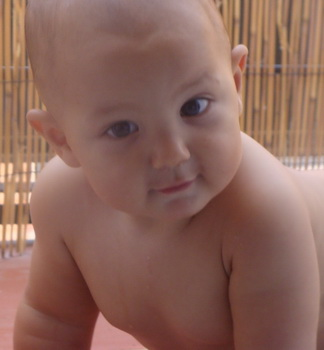

Manuel (Manu) Martín Fabregat
Manuel (Manu) Martín Fabregat  Martín Fabregat en el árbol familiar en formato SVG")

This page is within a frameset. View the entire genealogy report of Martín Fabregat families, or surname index of Martín Fabregat pedigrees or report summary of Martín Fabregat heritage from "Árbol Genealógico de Manolo y Amalia".
Genogram Examples.
© 2006 GenoPro Inc. All Rights Reserved.